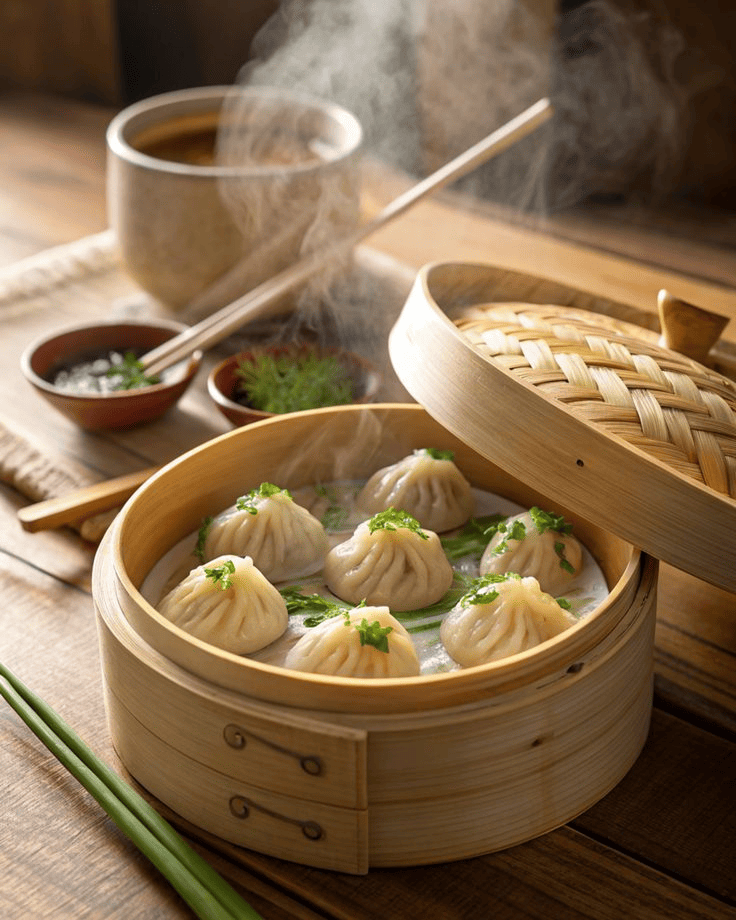
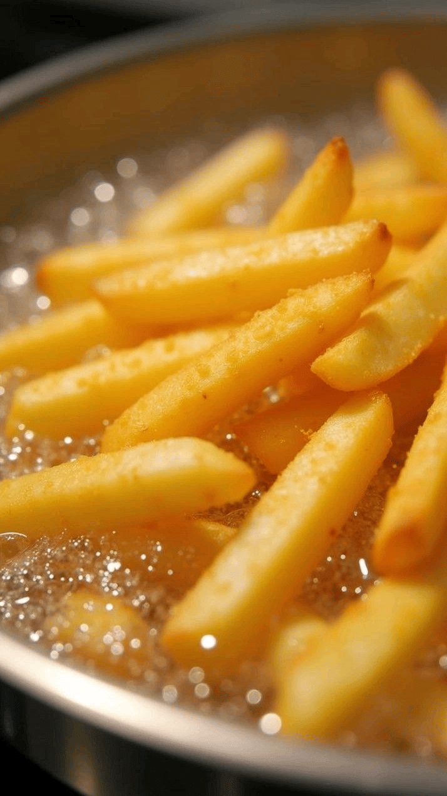
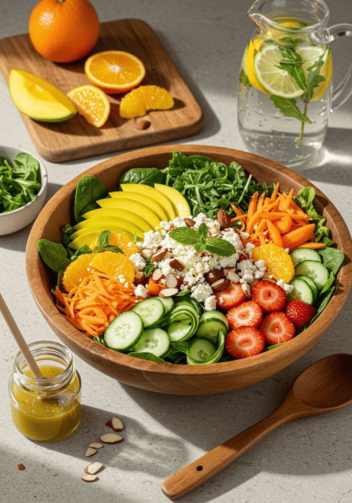
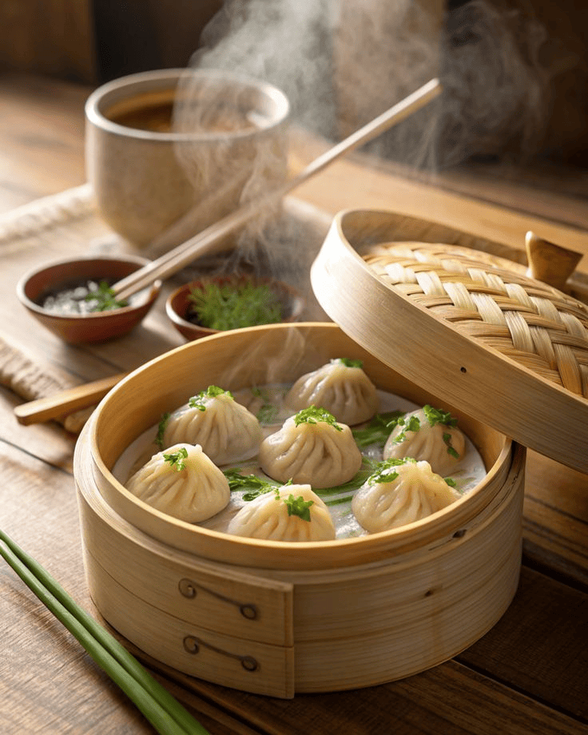
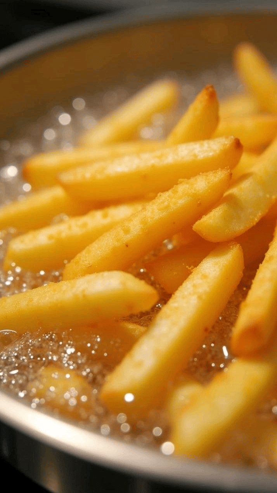
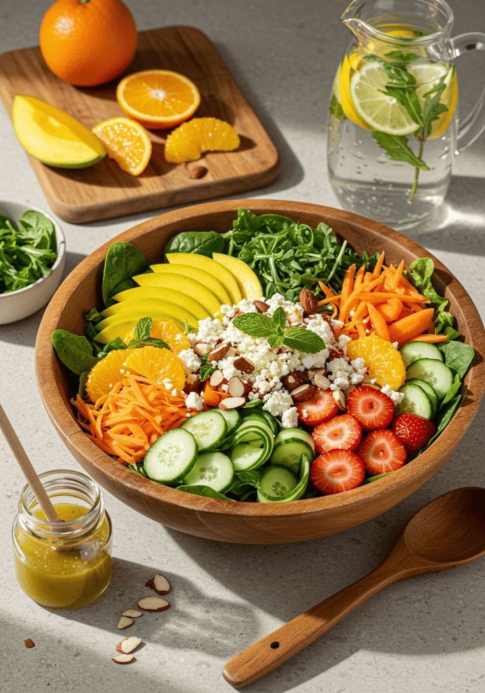

Trained Chefs
Chef: Selvakumar
Indian Cooking
(( ● )) live
4.5
Chef: Saravanan
Italian Cooking
(( ● )) live
4.5
Chef: Salamon
Asian Cooking
(( ● )) live
4.5

Chef: Wilson
Continental Cooking
(( ● )) live
4.5
Chef: Miller Jhon
Mexican Cooking
(( ● )) live
4.5
Chef: Christy Josh
Desserts&Baking
(( ● )) live
4.5
Indian Chef: Selvakumar
About:
Chef Selvakumar is a dedicated culinary professional with over 8–10 years experience in multi-cuisine kitchens, ranging from luxury resorts to high-volume operations. He is skilled in preparing both vegetarian and non-vegetarian dishes, with strengths in recipe development, food presentation, and managing kitchen operations. Chef Selvakumar is known for his ability to innovate—working with fresh ingredients, experimenting with flavors, and ensuring high quality and consistency. He also emphasizes efficiency, cost-control, and waste reduction in his cooking process.
Indian Chef
Italian Chef
Chinese Chef
Continental Chef
Mexican Chef
Desserts Chef
Style OF Cooking By Chef Selvakumar
Dry Heat Cooking
Moist Heat Cooking
Frying Techniques
Marination & Spicing
 





Slow Cooking / Dum Style
Fusion & Modern Twists
Healthy Preparations
Popular Dishes
Breakfast & Snacks
Idli with Sambar & Chutney
Poha
Aloo Paratha
Upma
Vada Pav
Pakoras (Onion, Potato, Paneer)
Main Course – Vegetarian
Palak Paneer
Chole (Chickpea Curry)
Dal Tadka / Dal Makhani
Baingan Bharta
Vegetable Biryani
Aloo Gobi (Potato & Cauliflower Curry)
Main Course – Non-Vegetarian
Chicken Tikka Masala
Rogan Josh (Lamb Curry)
Fish Curry (Kerala Style / Goan)
Hyderabadi Chicken Biryani
Chettinad Chicken
Prawn Masala
Rice & Breads
Vegetable Pulao
Hyderabadi Biryani
Roti / Chapati
Naan / Garlic Naan
Poori with Bhaji
Parathas (Stuffed, Plain, Laccha)
Street Food Specials
Pav Bhaji
Dahi Puri
Bhel Puri
Kathi Roll
Chole Bhature
Samosa with Chutney
Desserts & Sweets
Rasgulla
Jalebi
Kheer (Rice Pudding)
Gajar ka Halwa
Rasmalai
Mysore Pak